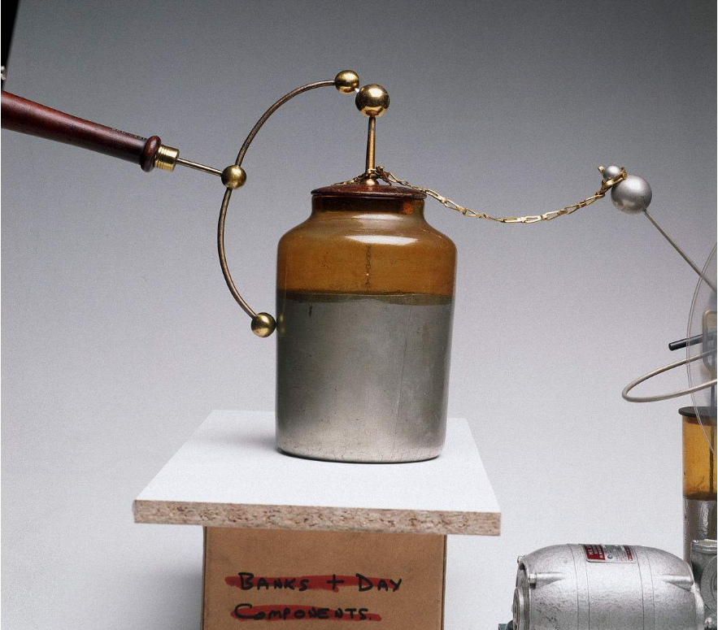
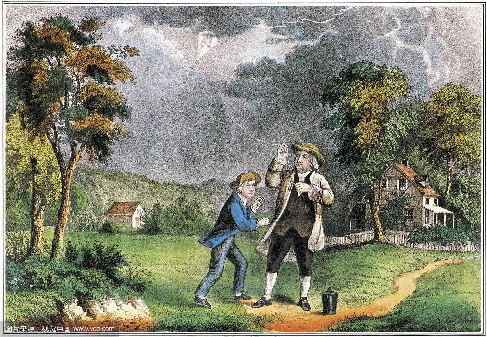

chapter10.2--handout
Background Information
Benjamin Franklin(本杰明.富兰克林)
本杰明·富兰克林，出生于美国马萨诸塞州波士顿，是一位优秀的政治家，是美国独立战争（War of Independence）的老战士。他参加起草了《独立宣言》（The Declaration of Independence）和美国宪法，积极主张废除奴隶制度，深受美国人民的崇敬。他是美国第一位驻外大使(法国), 成功取得法国支持美国独立。
他还是美国著名的科学家、发明家，在电学上成就显著。他最先提出了避雷针（lightning rod）的设想，由此而制造的避雷针，避免了雷击灾难，破除了迷信。
《富兰克林自传》是美国传记文学的开山之作，这本书的问世还使“自传（autobiography）”成为一种全新的文学体裁。书中讲述富兰克林从一位贫困家庭的孩子在经历种种磨难后成为一个令人难以置信的通才的成长经历。它包含了人生奋斗与成功的真知灼见，以及诸种善与美的道德真谛，被公认为是改变了无数人命运的美国精神读本。
除此之外，一百美元纸币上，正面是本杰明的头像，可见他在美国历史上的重要性。
doggerel(打油诗)
卡叔在写作时非常喜欢引用各种名句和从各处搜集来的有意思的小故事，有时是知名报纸，经典著作或者学生分享的真人真事，有时也会用一句打油诗（doggerel）。
今天学习的内容里就有一首很有意思的打油诗：
Here lies the body of William Jay, who died maintaining his right of way. He was right, dead right, as he sped along, but he's just as dead as if he were wrong.
威廉.杰的身体在此长眠，至死维护他的真理。他是正确的，绝对正确，如他的生命转瞬即逝。他输也好，赢也好，也都与他一起死去。
打油诗是一种富于趣味性的俚俗诗体，和真正的诗歌相比，打油诗内容和词句通俗诙谐，不拘于平仄韵律，要求的文学知识和格律不高，便于普通人口耳相传。
寥寥几句就能描绘出日常有趣的场景，可被用来对社会百态作出嘲弄及讥讽，也可以作为谜语，有时甚至没有太深刻的意思。
Vocabulary
futile
💧adj. producing no result or effect
形容词：无作用的；无效的
💧[SYN] useless；unnecessary
💧Your resistance is futile.
你的抵抗是无用的。
arrogant
💧adj. having or showing feelings of unwarranted importance out of overbearing pride.
adj. 自大的，傲慢的
💧反义词：humble
💧That sounds arrogant, doesn't it?
那话听起来很嚣张，是不是？
fraud
💧n.something intended to deceive; deliberate trickery intended to gain an advantage
n. 欺骗；诡计; 骗子
💧[SYN]deception
💧She also learned how to deal with cyber fraud.
她还学习到怎样去处理网络欺骗问题。
instinctive
💧adj. unthinking; prompted by (or as if by) instinct
adj. 本能的；直觉的；天生的
💧[SYN]natural
💧 It's an absolutely instinctive reaction.
这完全是本能的反应。
postpone
💧v.hold back to a later time
名词： 凯旋，胜利
v. 延缓，延迟
💧[SYN]delay; defer
💧Lacking money, they had to postpone their plan.
没有钱，他们只得推迟计划。
Crush Your Problems
- An item of nine thousand dollars was at stake.
有一笔9000美元的帐目出现了问题。
💧at stake：处于危险中；在紧要关头。在这里可以灵活理解为：出现了问题
e.g. The life of the wounded pilot is at stake.
受伤的飞行员生死未卜。
e.g. My honor is at stake, so I cannot let the matter rest．
这危及我的名誉，所以我不能不管。
💧意思相同的常用词组还有：at risk；in danger
- It is a lot easier at this stage to agree to think about their points / than to move rapidly ahead and find yourself in a position / where your opponents can say: "We tried to tell you, but you wouldn't listen."
💧句子中包含了常用的固定结构“It is...to do sth” 做某事如何如何...，但要注意区分哪一个to是属于这个结构的，这关系着能否区分出前后到底是哪两个部分在比较。很显然，是“ to agree to think about their points” 比 “to move rapidly ahead and find yourself in a position...”更为容易。position后面紧跟着一个where引导的定语从句。
💧本句话的意思是：在这个阶段考虑别人的观点是很容易做到的，而不是执意往前，让自己置于尴尬境地，等对方来说：“早就跟你说过，你就是不听。” - "No man who is resolved to make the most of himself," said Lincoln, "can spare time for personal contention.”
“决心有所成就的人，”林肯说，“不会有时间和别人一争长短。”
💧spare作为动词，意思为：分出，分让
💧contention：争论，争辩
💧为了让表达更加的生动，林肯 “正话反说”，以“No man”作为句子的主语
💧从句中“is resolved to” 表示 “决心...”
e.g. The company resolved to take no further action against the thieves.
公司决定不再继续追究这些窃贼。
类似的用法还有：
decide to do sth
be determined to do sth
make up one 's mind to do sth
Content Analysis
今天承接昨日内容，继续讨论如何让别人同意你。获得别人的认同，必然不能发生争执，尤其是没有理智的口头胜利。
正如本杰明.富兰克林的经典名句所说，如果你是个争强好胜的人，或许一时逞强可以赢得一场辩论，但这种胜利最终是毫无价值的，也得不到对手的任何好感。
(If you argue and rankle and contradict, you may achieve a victory sometimes; but it will be an empty victory because you will never get your opponent's good will.)
相比于赢得一个毫无价值的口头上的辩证胜利，赢得别人的敬意更为重要。两者是不可兼得的。
(You can seldom have both.)
帕森斯先生是一名税务顾问(income tax consultant)，曾经和一位政府税收稽查员(government tax inspector)争吵了一个小时，因为一项9000美金的问题账目。结果那位冷漠、倨傲(arrogant)、顽固不化的(stubborn)官老爷油盐不进，越是争论越是坚持自己。因此帕森斯先生转变了谈话方式，转而说一些恭维的话。
(So I decided to avoid argument, change the subject, and give him appreciation.)
于是事情出现了转机，稽查员因为他的话放松了下来，讲了一些自己过去的骄傲经历，甚至自己的家庭琐事，帕森斯先生认真倾听，没有任何的打断和反驳，最终稽查员撤收了这笔税收(leave the tax return exactly as it was filed)，帕森斯先生顺利完成了任务，为公司挽回了大额损失。
世事正如佛说：“冤冤相报何时了。”
(Hatred is never ended by hatred but by love.)
误会难以通过争辩消除，需要巧妙运用技巧，用宽厚的胸怀、同情心去化解。(A misunderstanding is never ended by an argument but by tact, diplomacy, conciliation and a sympathetic desire to see the other person's viewpoint.）
与人发生了争执，需高风亮节。
《点点滴滴》杂志中给出了一些避免争论的建议：
💧欢迎不同的声音；
(Welcome the disagreement.）
💧不要跟着感觉走；
(Distrust your first instinctive impression. )
💧控制你的情绪；
(Control your temper.)，
💧学会聆听；
(Listen first.)
💧求同存异；
(Look for areas of agreement.）
💧主动为自己的错误道歉；
(Apologize for your mistakes.)
💧重视不同的意见并认真思考，反对意见可能是明智之举；
(Your opponents may be right.)
💧感谢反对意见；
(Thank your opponents sincerely for their interest.)
💧谨言慎行。
(Postpone action to give both sides time to think through the problem.)
Today's Bonus
今天阅读内容的开头就提到了一位在美国历史上举足轻重的人物---本杰明.富兰克林。
富兰克林堪称“全才”，大家可能熟知他对美国独立作出的重要贡献，也是著名的科学家和发明家，尤其是在“电学”（electricity）研究方面，他曾经进行多项关于电的实验，其中最值得一提的是他和儿子一起进行的“风筝实验”（The kite experiment）。
1746年，英国伦敦一个叫柯林森的人，给他在美国的一位朋友富兰克林寄送了一只莱顿瓶（Leyden jar），并在信中向他介绍了使用方法。

富兰克林用莱顿瓶进行了许多科学实验，在实验中他看到了电火花（electric spark ），由此突然联想到了“上帝之火”――雷电。他还发现了电流（electric current）跟闪电（ lightning）在某些特性方面是一致的，这些相似性都指向一个结论：这两种现象是同一种物理现象。 但是由于缺乏足够的证据，他的这一结论并不被人认可。
为了验证自己的猜想，他决定“疯狂”一次。
1752年6月的一天，阴云密布，电闪雷鸣，一场暴风雨就要来临了。
富兰克林和他的儿子威廉一起，带着上面装有一个金属杆的风筝来到一个空旷地带。富兰克林高举起风筝，他的儿子则拉着风筝线飞跑。由于风大，风筝很快就被放上高空。刹那，雷电交加，大雨倾盆。一道闪电从风筝上掠过，富兰克林用手靠近系在牵着风筝的麻绳末端的铜钥匙，立即掠过一种恐怖的麻木感。他抑制不住内心的激动，大声呼喊：“威廉，我被电击了！”随后，他又将风筝线上的电引入莱顿瓶中。

回到家里以后，富兰克林用雷电进行了各种电学实验，证明了天上的雷电与人工摩擦产生的电的确具有完全相同的性质。由此他关于天上和人间的电是同一种东西的假说得到了证实。
著名哲学家康德（Kant）曾这样评价富兰克林：“他是天堂盗火者，他是第二个普罗米修斯。”
其实，他更是当世雷神索尔（Thor）的化身。